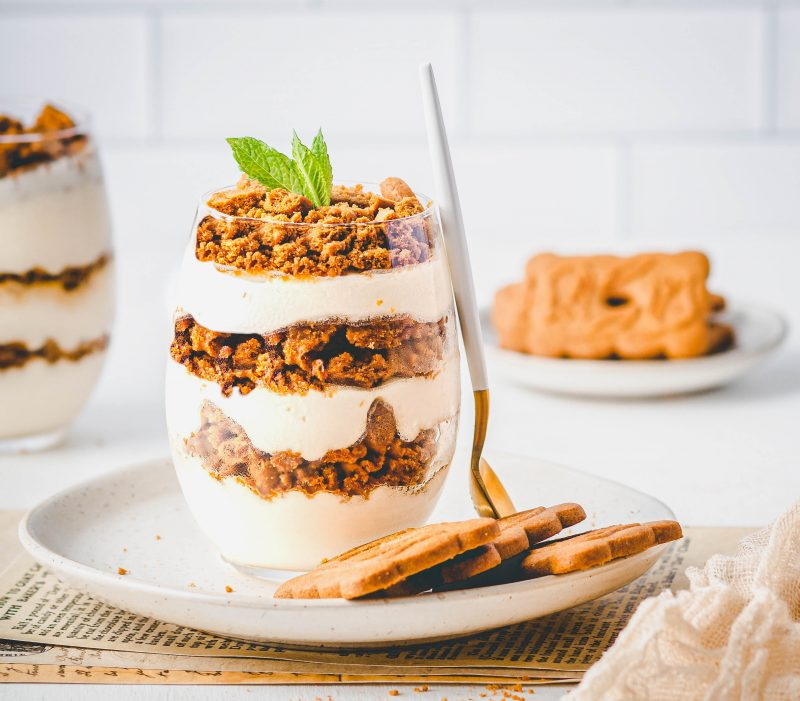
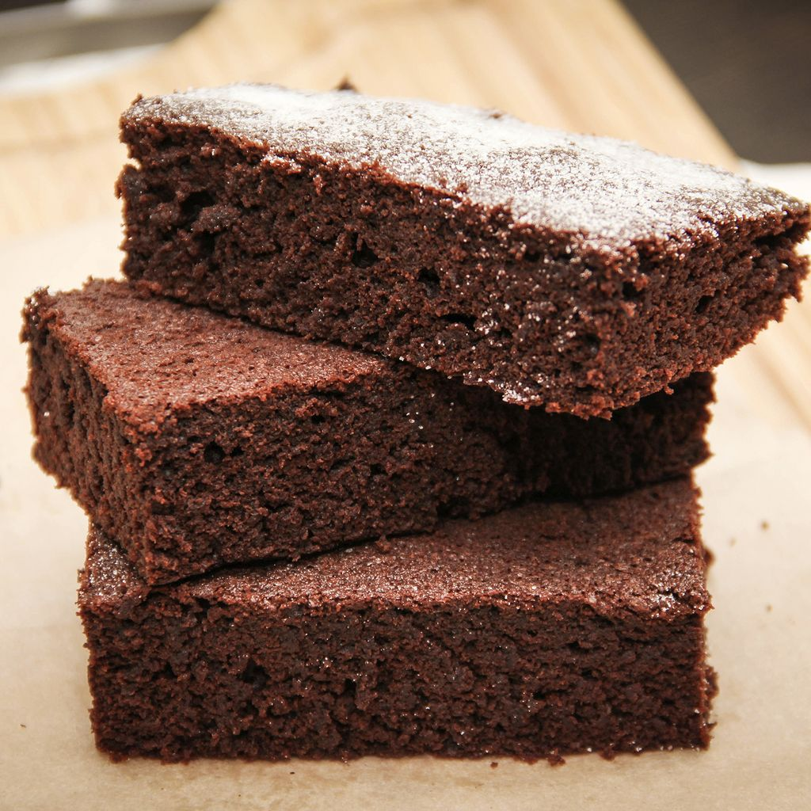

Recette du tiramisu au speculoos

Ingredients pour 6 personnes
- 80g de sucre roux
- 300g de spéculoos
- 250g de mascarpone
- 1 sachet de sucre vanillé
- 3 oeufs
- environ 1 petite tasse de café
- cacao
Préparation
- Faire un ruban avec les jaunes d'oeufs, le sucre et le sucre vanillé.
- Y ajouter le mascarpone.
- Battre les blancs en neige, les incorporer délicatement au mélange.
- Monter le gâteau: tremper, au fur et à mesure, les speculoos dans le café (attention à ne pas les "détremper").
- Dans un plat, mettre une couche de biscuits, ensuite une couche de crème au mascarpone. Ensuite une autre couche de biscuits, et terminer par une couche de crème.
- Saupoudrer de cacao, couvrir d'un film plastique et mettre au réfrigérateur quelques heures.
Recette du moelleux au chocolat sans beurre sans sucre

Recette sur marmiton
Ingredients pour 6 personnes
- 200g de chocolat noir
- 2 cuillères à soupe rases de maïzena
- 4 oeufs
- 20cl de crème liquide ou mélanger avec du lait
Préparation
- Préchauffez le four à thermostat 5 (150°C).
- Faites chauffer la crème. Hors du feu,
- ajoutez le chocolat cassé en petits morceaux. Mélangez pour obtenir une préparation lisse, puis incorporez la maïzena et les 4 jaunes d'oeufs.
- Beurrez un moule à manquer. Battez les blancs en neige, et incorporez-les à la préparation au chocolat. Versez dans le moule et faites cuire 35 mn.